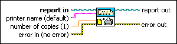

Print Report VI
Owning Palette: Report Generation VIs
Requires: Base Development System
Prints a report to a designated printer or to the default printer on the computer.
If you use this VI to print an HTML report, the computer printing the report must have Internet Explorer installed.
 | Note If you use this VI to print a Microsoft Word report and you assign a printer to the printer name input other than the default system printer, Microsoft Word resets the default system printer to the printer you assigned to the printer name input. |

 Add to the block diagram Add to the block diagram |
Find on the palette |